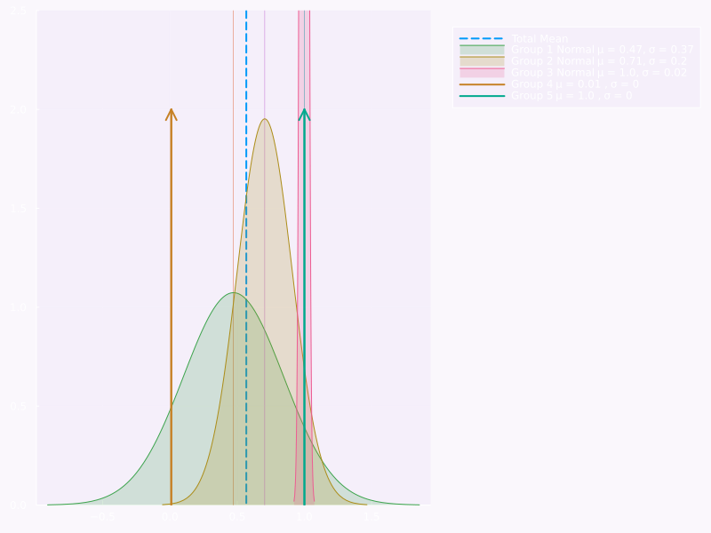

Show the code
using DataFrames, DataFramesMeta, BrowseTables, Parquet
using Distributions, StatsPlots, Statistics
using Plots
using LaTeXStrings‚ú® Economic data üìä , Julia ü§ó and Jupyterü™ê

The setup : libs & data
using DataFrames, DataFramesMeta, BrowseTables, Parquet
using Distributions, StatsPlots, Statistics
using Plots
using LaTeXStringsImporting the data
df = DataFrame(
read_parquet("C:\\Users\\arnov\\Documents\\code\\notebooks\\quarto\\econ\\data\\data-clean-full-latest.parquet"))
first(df, 10)| Row | perc | country | year | rel_income | original | code | num | label |
|---|---|---|---|---|---|---|---|---|
| Float64? | String? | Int64? | Float64? | String? | String? | Int64? | String? | |
| 1 | 0.1 | Albania | 2017 | 2.0 | D1:First decile | D | 1 | First decile |
| 2 | 0.1 | Albania | 2018 | 2.0 | D1:First decile | D | 1 | First decile |
| 3 | 0.1 | Albania | 2019 | 2.3 | D1:First decile | D | 1 | First decile |
| 4 | 0.1 | Albania | 2020 | 2.5 | D1:First decile | D | 1 | First decile |
| 5 | 0.1 | Austria | 1995 | 3.0 | D1:First decile | D | 1 | First decile |
| 6 | 0.1 | Austria | 1996 | 4.0 | D1:First decile | D | 1 | First decile |
| 7 | 0.1 | Austria | 1997 | 4.0 | D1:First decile | D | 1 | First decile |
| 8 | 0.1 | Austria | 1998 | 4.0 | D1:First decile | D | 1 | First decile |
| 9 | 0.1 | Austria | 1999 | 4.0 | D1:First decile | D | 1 | First decile |
| 10 | 0.1 | Austria | 2000 | 4.0 | D1:First decile | D | 1 | First decile |
Here we have two values, \(Q(p)\) and \(p\), where \(p\) is a percentile and \(Q\) the Quantile function.
You could conversely see it as \(q\) and \(F(q)\), where \(q\) is a quantile and \(F\) the CDF.
We want to find a decent model for \(F\). We’ll try a few methods first:
Let’s first look at the data: the true model actually depends on \(\langle t, k, p \rangle\) (time, country and percentile), but we’ll ignore that for now.
dfg = groupby(df, :rel_income)
dfr = hcat(
combine(dfg,
:perc => ((p) -> quantile(p, 0.025)) => :perc_025,
:perc => ((p) -> quantile(p, 0.05)) => :perc_05,
:perc => ((p) -> quantile(p, 0.25)) => :perc_25,
:perc => ((p) -> quantile(p, 0.5)) => :perc_50,
:perc => ((p) -> quantile(p, 0.75)) => :perc_75,
:perc => ((p) -> quantile(p, 0.95)) => :perc_95,
:perc => ((p) -> quantile(p, 0.975)) => :perc_975,
),
combine(dfg,
:perc => mean => :perc_mean,
:perc => std => :perc_std,
),
makeunique=true
)| Row | rel_income | perc_025 | perc_05 | perc_25 | perc_50 | perc_75 | perc_95 | perc_975 | rel_income_1 | perc_mean | perc_std |
|---|---|---|---|---|---|---|---|---|---|---|---|
| Float64? | Float64 | Float64 | Float64 | Float64 | Float64 | Float64 | Float64 | Float64? | Float64 | Float64 | |
| 1 | 2.0 | 0.1 | 0.1 | 0.95 | 0.95 | 0.97 | 0.98 | 0.98 | 2.0 | 0.887081 | 0.238359 |
| 2 | 2.3 | 0.1 | 0.44 | 0.96 | 0.97 | 0.98 | 0.99 | 0.99 | 2.3 | 0.925874 | 0.193118 |
| 3 | 2.5 | 0.1 | 0.1 | 0.97 | 0.98 | 0.98 | 0.99 | 0.99 | 2.5 | 0.914111 | 0.228064 |
| 4 | 3.0 | 0.1 | 0.1 | 0.1 | 0.98 | 0.99 | 0.99 | 0.99 | 3.0 | 0.58037 | 0.442832 |
| 5 | 4.0 | 0.1 | 0.1 | 0.1 | 0.1 | 0.2 | 1.0 | 1.0 | 4.0 | 0.327748 | 0.36602 |
| 6 | 3.5 | 0.1 | 0.1 | 0.1 | 0.1 | 0.99 | 0.9995 | 1.0 | 3.5 | 0.466774 | 0.434103 |
| 7 | 3.6 | 0.1 | 0.1 | 0.1 | 0.15 | 0.99 | 1.0 | 1.0 | 3.6 | 0.432571 | 0.42075 |
| 8 | 3.8 | 0.1 | 0.1 | 0.1 | 0.2 | 1.0 | 1.0 | 1.0 | 3.8 | 0.474231 | 0.436471 |
| 9 | 3.4 | 0.1 | 0.1 | 0.1 | 0.98 | 0.99 | 1.0 | 1.0 | 3.4 | 0.564386 | 0.440106 |
| 10 | 3.3 | 0.1 | 0.1 | 0.1 | 0.1 | 0.99 | 0.994 | 1.0 | 3.3 | 0.491507 | 0.443608 |
| 11 | 3.2 | 0.1 | 0.1 | 0.1 | 0.98 | 0.99 | 1.0 | 1.0 | 3.2 | 0.603625 | 0.439773 |
| 12 | 3.1 | 0.1 | 0.1 | 0.1 | 0.98 | 0.99 | 0.99 | 0.99 | 3.1 | 0.661707 | 0.429311 |
| 13 | 3.7 | 0.1 | 0.1 | 0.1 | 0.1 | 0.99 | 1.0 | 1.0 | 3.7 | 0.379474 | 0.406705 |
| ⋮ | ⋮ | ⋮ | ⋮ | ⋮ | ⋮ | ⋮ | ⋮ | ⋮ | ⋮ | ⋮ | ⋮ |
| 495 | 39.3 | 1.0 | 1.0 | 1.0 | 1.0 | 1.0 | 1.0 | 1.0 | 39.3 | 1.0 | 0.0 |
| 496 | 35.8 | 1.0 | 1.0 | 1.0 | 1.0 | 1.0 | 1.0 | 1.0 | 35.8 | 1.0 | 0.0 |
| 497 | 34.2 | 1.0 | 1.0 | 1.0 | 1.0 | 1.0 | 1.0 | 1.0 | 34.2 | 1.0 | 0.0 |
| 498 | 37.2 | 1.0 | 1.0 | 1.0 | 1.0 | 1.0 | 1.0 | 1.0 | 37.2 | 1.0 | 0.0 |
| 499 | 37.6 | 1.0 | 1.0 | 1.0 | 1.0 | 1.0 | 1.0 | 1.0 | 37.6 | 1.0 | 0.0 |
| 500 | 36.1 | 1.0 | 1.0 | 1.0 | 1.0 | 1.0 | 1.0 | 1.0 | 36.1 | 1.0 | 0.0 |
| 501 | 33.6 | 1.0 | 1.0 | 1.0 | 1.0 | 1.0 | 1.0 | 1.0 | 33.6 | 1.0 | 0.0 |
| 502 | 33.2 | 1.0 | 1.0 | 1.0 | 1.0 | 1.0 | 1.0 | 1.0 | 33.2 | 1.0 | 0.0 |
| 503 | 33.1 | 1.0 | 1.0 | 1.0 | 1.0 | 1.0 | 1.0 | 1.0 | 33.1 | 1.0 | NaN |
| 504 | 34.1 | 1.0 | 1.0 | 1.0 | 1.0 | 1.0 | 1.0 | 1.0 | 34.1 | 1.0 | NaN |
| 505 | 32.3 | 1.0 | 1.0 | 1.0 | 1.0 | 1.0 | 1.0 | 1.0 | 32.3 | 1.0 | NaN |
| 506 | 49.5 | 1.0 | 1.0 | 1.0 | 1.0 | 1.0 | 1.0 | 1.0 | 49.5 | 1.0 | 0.0 |
Let’s estimate upper and lower confidence bounds for the CDF function \(F\).
dfr = hcat(
dfr,
combine(dfr,
[:perc_mean, :perc_std] => ByRow.((m,s) -> m + 2 * s) => :perc_upper_std,
[:perc_mean, :perc_std] => ByRow.((m,s) -> m - 2 * s) => :perc_lower_std
),
makeunique=true
)
dfr = select(dfr, Not(:rel_income_1))
latexstring(raw"""
\mu(P) = """ * "$(round(mean(df.perc), digits=2))" * raw"""\quad \text{and} \quad
\sigma(P) = """ * "$(round(std(df.perc), digits=2))" )\(\mu(P) = 0.57\quad \text{and} \quad \sigma(P) = 0.36\)
This means that on aggregate we have this mental picture of the typical quartile distribution:
mu = round(mean(df.perc), digits=2)
sigma = round(std(df.perc), digits=2)
plot(
Normal(
mu,
sigma
),
fill=(0, .2, :pink),
linecolor=:purple,
label="""Normal plot \\mu = $(mu), \\sigma = $(sigma)""",
size=(800, 600),
background_color="#7711d708"
)But that aggregate picture is not very useful. Let’s look at the distribution by relative income.
function linspace(start::Any, stop::Any, n::Int)
step = (stop - start) / (n - 1)
return start:step:stop
end
function diracPlot(x, y, label = "")
plot!([x,x],[0,y],arrow=true,linewidth=2, label=label)
end
bins = linspace(minimum(df.rel_income), maximum(df.rel_income), 5)
dfbin = combine(df,
:rel_income => ByRow.((x) -> bins[findfirst(bins .>= x)]) => :bin_rel_income,
:perc => identity => :perc
)
dfgbin = combine(
groupby(dfbin, :bin_rel_income),
:perc => mean => :perc_mean,
:perc => std => :perc_std
)
p = plot(
vline(
[mean(df.perc)],
label="Total Mean",
linestyle=:dash,
linewidth=2,
ylims=(0, 2.5),
legend=:outertopright,
background_color="#7711d708"
),
)
for i in 1:size(dfgbin, 1)
sstd = dfgbin[i, :perc_std]
smean = dfgbin[i, :perc_mean]
bin_rel_inc = bins[i]
if isnan(sstd) || sstd <= 1e-6
diracPlot(smean, 2, "Group $(i) \\mu = $(round(smean, digits=2)) , \\sigma = 0")
sstd = 0
else
vline!(
[smean],
label="",
linewidth=0.5,
ylims=(0, 2.5),
)
plot!(
Normal(
smean,
sstd
),
fill=(0, .2),
label="Group $(i) Normal \\mu = $(round(smean, digits=2)), \\sigma = $(round(sstd, digits=2))",
size=(800, 600),
background_color="#7711d708"
)
end
end
@show pp = Plot{Plots.GRBackend() n=9}
This is just us toying around with the data though, let us now plot the CDF function \(F\) and the confidence bounds.
Those confidence bounds are not very realistic because we treat a variable that’s bounded within \((0,1)\) as if it were normally distributed. But it’s a good enough approximation for our purposes.
_dfr = dropmissing(sort(dfr, :rel_income))
plot(
_dfr.rel_income,
_dfr.perc_mean,
ribbon=(_dfr.perc_lower_std, _dfr.perc_upper_std),
fillalpha=0.2,
fillcolor=:blue,
label="",
xlabel="Relative income",
ylabel=L"Share of population (cdf $\hat{F}$)",
title="Share of population by relative income",
legend=:bottomright,
size=(800, 600),
ylims=(0, 1.6),
xlims=(0, 28),
background_color="#7711d708"
)
plot!(
_dfr.rel_income,
[_dfr.perc_lower_std, _dfr.perc_upper_std],
xlims=(0, 28),
)
Due to marginalisation across two dimensions, we have a 1D distribution, which we can plot as a curve.
But we can clearly see the uncertainty around that curve. Let‚Äôs see the quantiles now üßê
plot(
_dfr.rel_income,
[_dfr.perc_05, _dfr.perc_50, _dfr.perc_95],
ribbon=(_dfr.perc_lower_std, _dfr.perc_upper_std),
fillalpha=0.2,
fillcolor=:blue,
label="",
xlabel="Relative income",
ylabel=L"Share of population (cdf $\hat{F}$)",
title="Share of population by relative income",
legend=:bottomright,
size=(800, 600),
ylims=(0, 1.1),
xlims=(0, 28),
background_color="#7711d708"
)